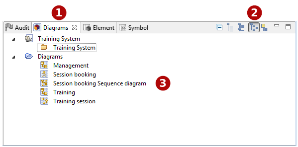

The Diagrams view¶

The Diagrams explorer view in User Folder mode¶
Key:
- 1. The “Diagrams” tab.
- 2. The “Diagrams” view toolbar.
- 3. Diagrams
Main diagram explorer commands¶
From the Diagrams explorer contextual menu:
- Create a folder [ – Create a folder] : Creates a user folder under the selected element.
- Delete an element [
 – Delete / Del key] : Delete the selected element.
– Delete / Del key] : Delete the selected element.
- Rename an element [ – Rename / F2 key] : Rename the selected element.
From the Diagrams explorer toolbar:
- Collapse all [
 ] : Collapses all elements and shows only the root project.
] : Collapses all elements and shows only the root project.
- Flat view [] : Display the diagrams in flat view.
- List diagrams by type [
 ] : Display the diagrams in folders according to their type.
] : Display the diagrams in folders according to their type.
- List diagrams by user folders [] : Display shortcuts to the diagrams in folders created by the user.
- List diagram by owner [] : Display the diagrams under their owner.
Note: For more information, see “Creating a diagram” and
“Opening a diagram”.